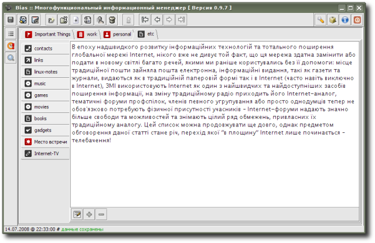

PlainText
- simple extension, that provides an ability to create usual text notes; only font size can be adjusted (font itself is monospaced).
Extension is provided by
R. Kasianenko
, an author of Bias application.
Preview:
